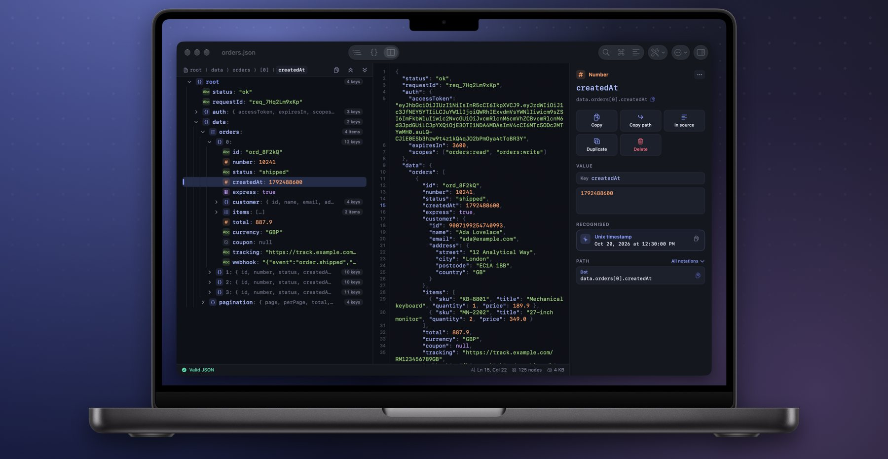
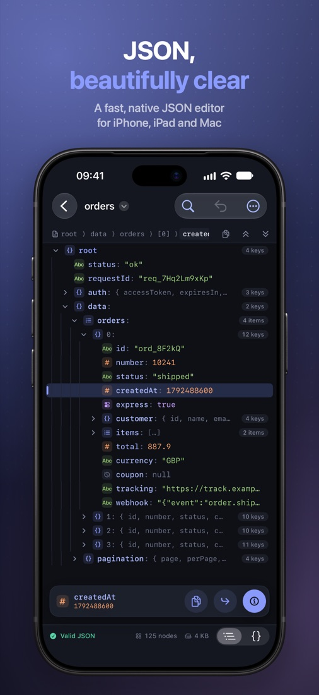
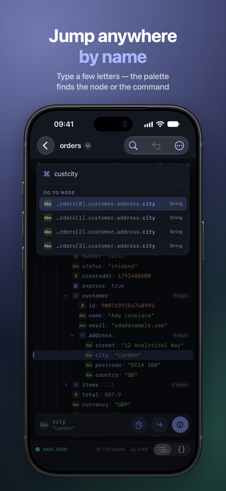
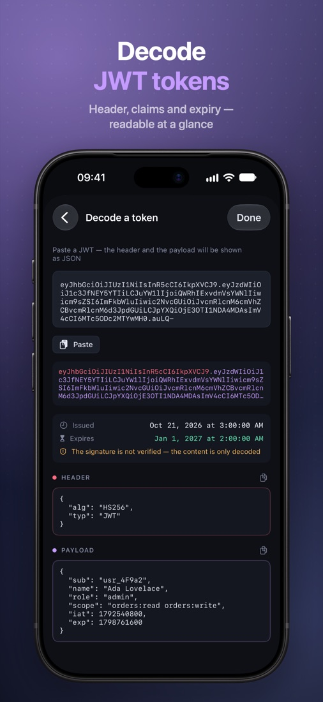
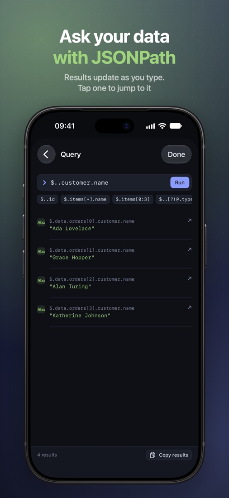
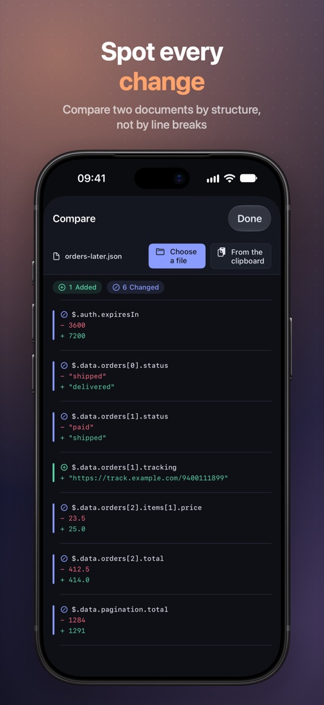
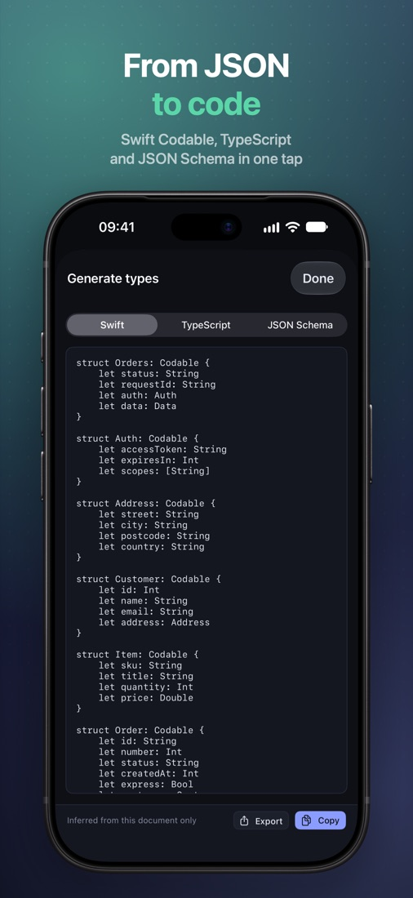
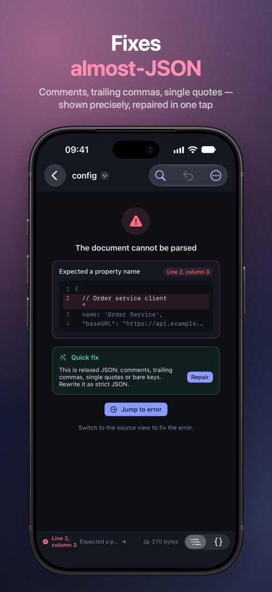
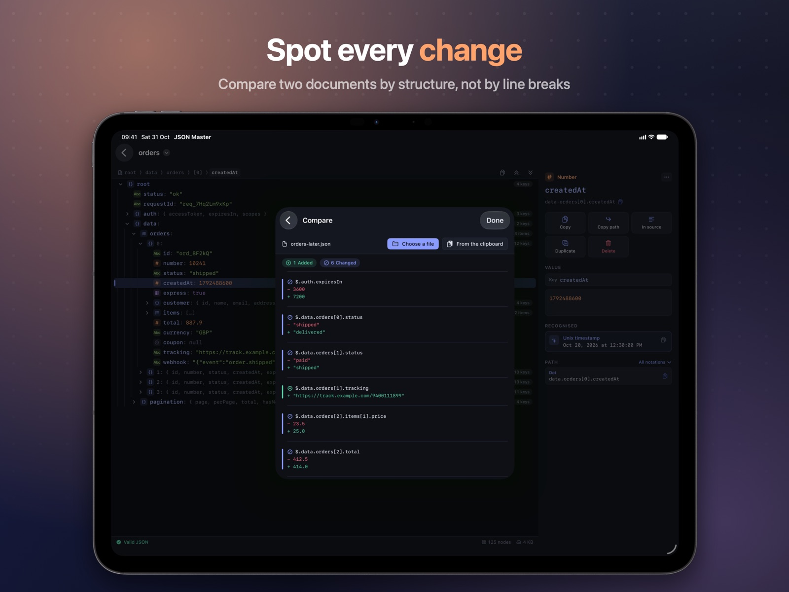
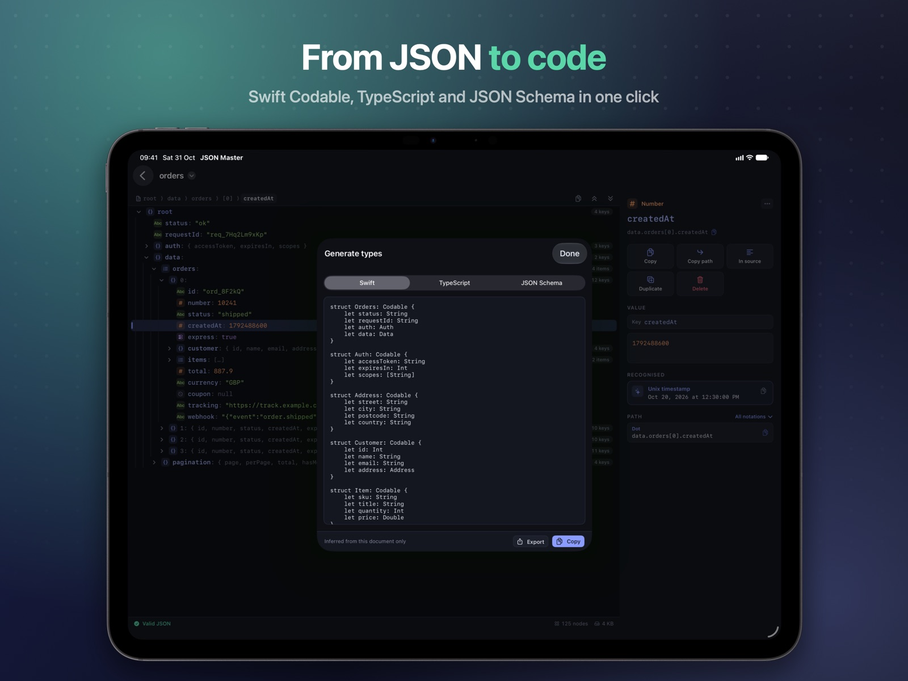

JSON, beautifully clear
A fast, native JSON editor for iPhone, iPad and Mac — built around what you do with JSON all day: find a value, copy its path, and understand what it holds.
iPhone · iPad · Mac · Apple Vision Pro — in seven languages

Two views, one file
The tree is for reading and restructuring, the source for fixing what does not parse. Both are the same text, always in sync — and an untouched file is saved back byte for byte.







Everything you do with JSON
No web view, no account, works offline. Just the tools you reach for every day.
Jump anywhere by name
The command palette runs any command and fuzzy-jumps to any node: adrcity finds customer.address.city. Breadcrumbs, back and forward keep you oriented.
Copy the path, any way
Six notations — dot, JSONPath, brackets, jq, Swift and JSON Pointer — each one tap away. Copy values, whole branches, keys or key-value pairs.
Understand every value
Unix timestamps, JWT tokens, base64, ISO 8601 dates and URLs are recognised and explained. Integers beyond 253 are flagged before JavaScript rounds them.
Ask with JSONPathPRO
Keys, indices, slices, wildcards, recursive descent and conditions. Results update as you type, and each one jumps to its node.
Fix almost-JSON
Comments, trailing commas, single quotes and bare keys are rewritten as strict JSON in one undoable step. A broken file shows the exact line and column.
From JSON to codePRO
Swift Codable, TypeScript interfaces or JSON Schema, with optional fields inferred from the whole array — the thing most often missed by hand.
Room to work on iPad and Mac
Tree, source and inspector side by side, with full keyboard control.
Decode JWT tokens
Header, claims and expiry, readable at a glance. The signature is not verified — and the app says so instead of pretending.

Spot every changePRO
Compare against another file or the clipboard by structure, not by line breaks: reordered keys are not a difference, and reindenting does not mark the whole file as changed.

Types from real dataPRO
Swift Codable with CodingKeys only where names differ, TypeScript interfaces or JSON Schema. And for the whole document, free: format and minify, sort keys, expand embedded JSON, remove empty values and duplicate keys. With Pro, also export to CSV.
Four themes, your pick
Switch live from Settings or the command palette. Midnight and Daylight are free, Graphite and Amber CRT come with Pro. Data stays monospaced; the interface around it uses the system font.
"total": 887.9
"total": 887.9
"total": 887.9
"total": 887.9
Free to use, Pro when you need more
Everything you do with JSON every day is free. JSON Master Pro adds the tools for deeper work: one purchase, no subscription.
JSON Master
Free
- Tree and source, always in sync
- Search and the ⌘K command palette
- Inspector and copying paths in six notations
- Editing, format, minify, sort keys, repair
- Large files and JSON Lines
- JWT decoding
- Midnight and Daylight themes
JSON Master Pro
One-time in-app purchase, on iPhone, iPad and Mac
- JSONPath queries with live results
- Structural compare
- Swift, TypeScript and JSON Schema types
- Summary with findings
- CSV export
- Graphite and Amber CRT themes
Your data never leaves your device
No accounts, no analytics, no ads. Documents are ordinary files in Files, iCloud Drive or Finder, and no part of them is ever sent anywhere; the app talks only to the App Store, and only for JSON Master Pro. Read the privacy policy.
Get JSON Master
English, German, French, Ukrainian, Spanish, Japanese and Portuguese. Requires iOS 18, iPadOS 18, macOS 15 or visionOS 2.
Questions? See Support.